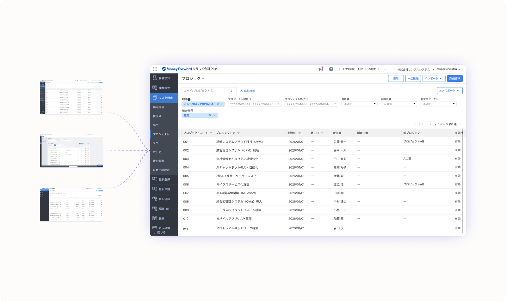
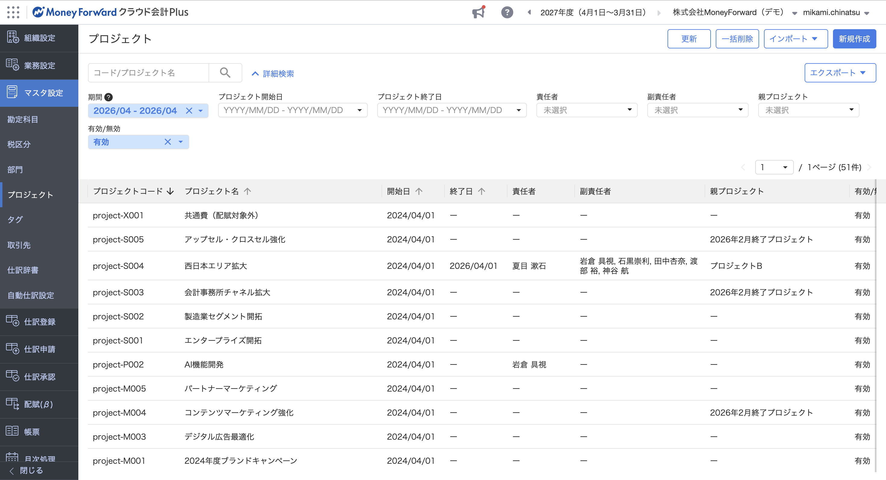
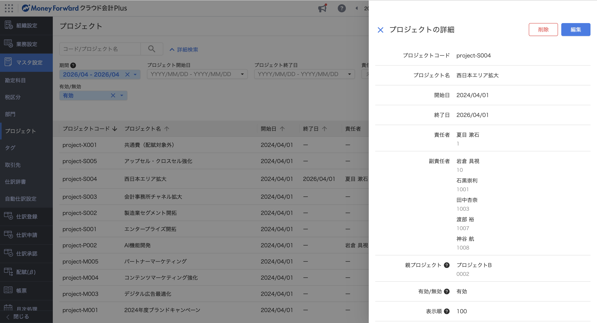
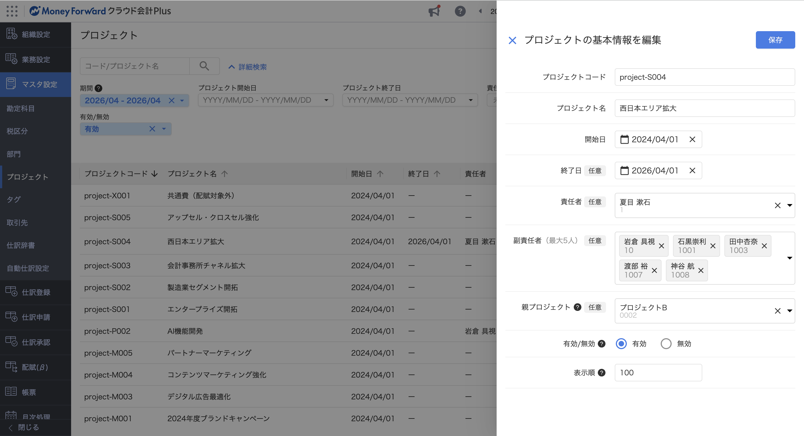
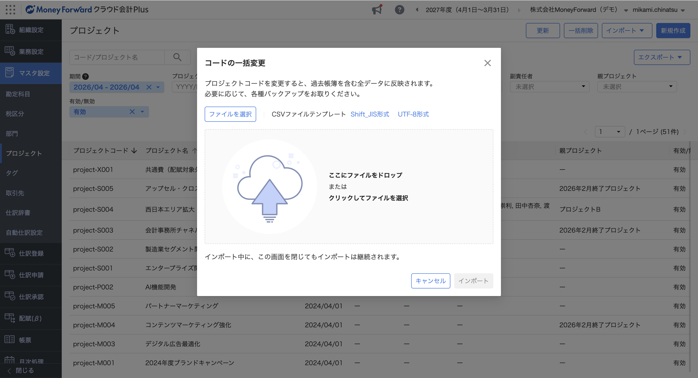
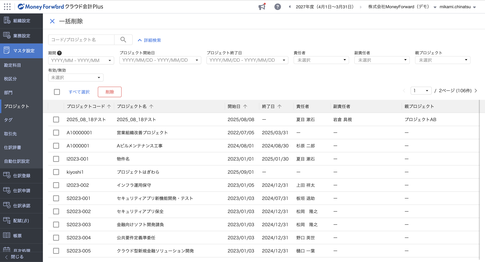
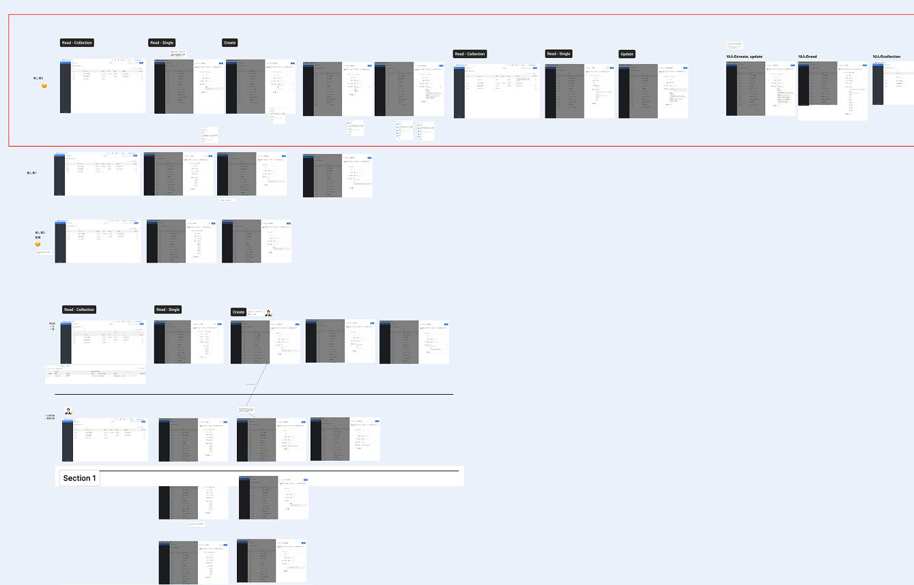
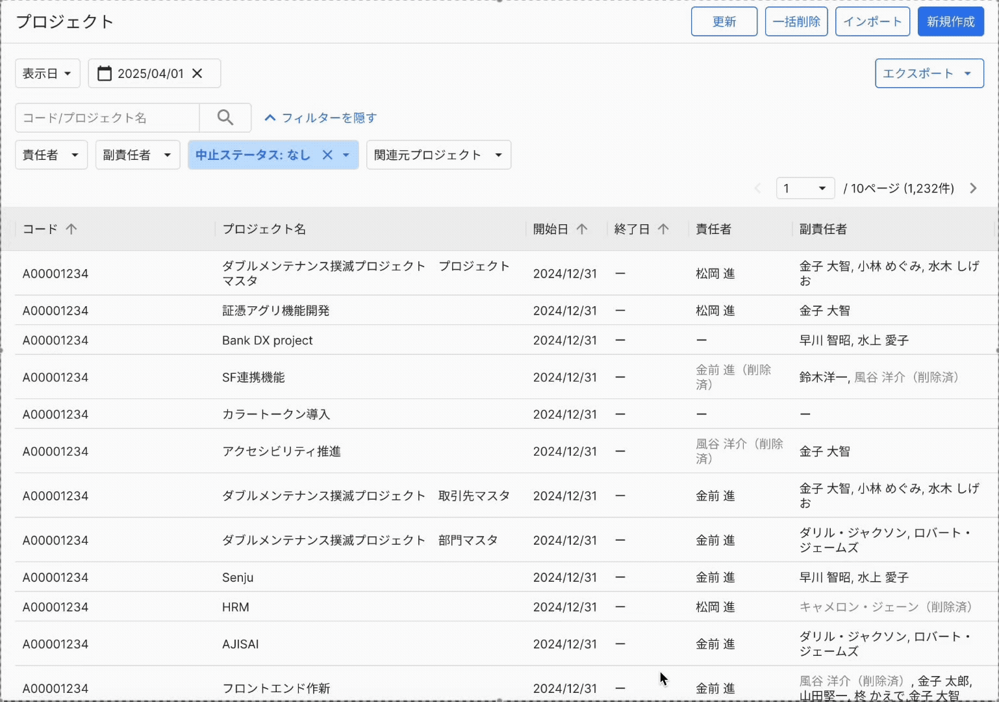
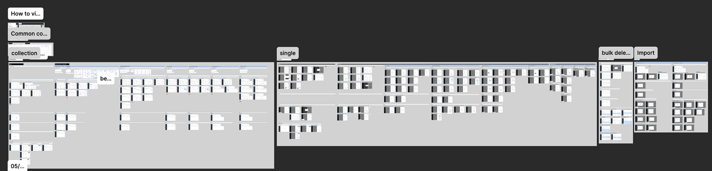
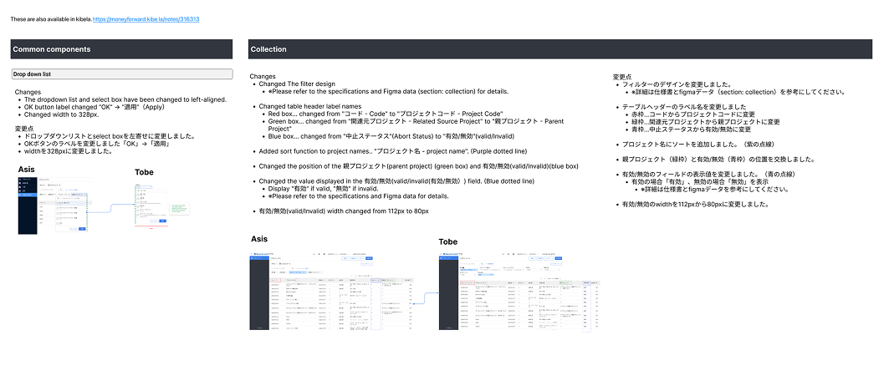

Work
期間：1年半 ｜ 役割：リードデザイナー

管理画面を統合し、迷いのない運用体験へ
マネーフォワードの複数サービスに存在していたプロジェクト管理画面のデザインや基盤を一つに統合したプロジェクト。メインデザイナーとして要件策定からUI設計、関係各所との合意形成を推進し、「迷わず、ミスなく運用できる」管理画面を作成した。





基盤統合チームのリードデザイナーとして、3つのプロダクトチームとのデザイン調整や合意形成のハブを担いました。
基盤統合チーム
🇻🇳 ベトナム支社
統合対象のプロダクトチーム
クラウド会計Plus
PdM / デザイナー / エンジニア
クラウド個別原価
PdM / デザイナー / エンジニア
クラウド経費/債務支払い
PdM / デザイナー / エンジニア
併用ユーザーのプロジェクト運用不可が増大
それぞれのプロダクトで操作が必要なため、運用不可が増大していた。
エンタープライズ企業の失注の要因に
プロジェクト運用負荷の高さが、エンプラ企業の導入検討時の懸念材料となり、失注要因の1つになっていた。
課題 1
複雑な条件下でのUI作成
複数プロダクトの基盤として、社内デザインガイドラインやプロダクト間のデータ連携など多くの制約を加味しながらも、ユーザーフォーカスなUI作成を心がけた。
解決策 1
拡張性を考慮した機能設計
現在の要件だけでなく将来の拡張性も視野に入れ、機能の切り分けを判断
設計判断に必要な将来構想をPdMに確認
将来「一括操作」の機能が増える場合の機能概要・実装時期についてPdMと目線を揃えた。
将来の一括操作機能が一括削除に与える影響を検討
PdMとの議論をもとに、将来追加される可能性がある一括操作機能のUIを先行して検討し、一括削除との統合が適切かどうかを判断した。機能の複雑さ・実装時期・UIへの影響の3つの観点から整理し、現時点のデザインに反映すべきか否かを判断した。
検討内容をPdMとすり合わせ
意思決定：一括削除と将来的な一括操作機能は、切り分けて設計する。
意思決定
一括削除と将来的な一括操作機能は、切り分けて設計する。
意思決定の背景
将来実装される可能性がある「一括部門移管」は、複雑な操作フローを要する特殊な機能になると予測された。実装時期も5年以上先になる見込みであったため、現時点の「一括削除」と無理に統合せず、機能として切り分ける判断をした。
現在と将来の2軸でデザイン案を検討し、拡張性を考慮
現在と将来の2軸でデザイン案を検討し、UX観点でのメリデメを整理
現状と将来の拡張性を考慮した複数案を比較し、UX観点でのメリット・デメリットを整理した。
意思決定の背景
現在と将来の2軸で案を整理することで、拡張性を担保した設計の根拠を可視化した。
検討内容をPdMと議論し、デザインを確定
意思決定
ラベルを左上に独立させ、セレクトボックスの横幅を固定する。
意思決定の背景
メイン画面の操作性を優先し、将来的なフィルター項目の増加にも対応できるよう、ラベルを左上に独立させセレクトボックスの横幅を固定する設計を採用した。既存プロダクト（会計Plus）との一貫性も考慮した。
解決策 2
社内デザインガイドラインと実態を考慮し、UIを提案
社内デザインガイドラインでは「一覧画面での操作」が推奨されていたが、プロジェクト管理における利用頻度や視認性の実態とは乖離があった。「一括削除モード」への集約を提案し、ガイドライン責任者・PdMとの協議を経てデザインを確定した。
ガイドラインの推奨案と実態のギャップを整理し、代替案を提案
ガイドライン推奨の「一覧画面での操作」に対し、利用頻度や視認性の観点から「一括削除モード」案も検討。
A案：一覧画面での操作（ガイドラインに則ったデザイン）
B案：一括削除モード
ガイドライン責任者・PdMと協議
B案の方向性が最適と判断したが、社内デザインガイドラインに準拠しない形になるため、ガイドライン責任者とPdMに相談。こちらの意図と根拠を説明しつつ、ガイドラインへの準拠度合いや温度感について擦り合わせた上で、デザインをブラッシュアップした。
最終決定
デザインの一貫性を守りつつ、運用の実情に即したデザインとして最終決定した。
意思決定
B案：一括削除モードで実装する
意思決定の背景
利用頻度が極めて低い機能のために、メイン画面の視認性を恒久的に下げることは不合理と判断。ガイドライン責任者との協議を経て、運用の実情に即した例外として合意を得た。
課題 2
4チーム間の課題感のズレによる議論の空中戦
お互いに基盤化の重要性は理解していても、チームや立場によって優先したい観点が違っていた。その結果、議論が空中戦になりがちだったため、チーム間の課題の目線を揃えて「同じゴール」を見る仕組みが必要だった。
解決策 1
図解やラフUIを即座に作成し、その場で認識合わせ
抽象的な議論が続く際も、PdMやプロダクトチームの意図を図解やラフUIでその場で作成。「この理解で合っていますか？」と確認し、スピーディーな目線合わせを心がけた。発言の意図を深ぼる中で、お互いの背景や課題感の目線を揃えるよう心がけた。
PJの発生→消し込みまでのプロセスについて各プロダクトのPdMと目線合わせ。その場の発言からプロセス図を作成した。
フィルタの使い方のニーズとその解決法について図をその場で作成し、課題間の目線を合わせた。
解決策 2
会議では疑問点の深掘りにフォーカス
デザインや仕様の合意形成の会議では、事前に要件やUIの根拠を非同期で共有し、デザイン共有を会議で省略。疑問点のヒアリングに注力することでプロダクトチームと自チーム間の目線のズレを解消した。
Process 1
要件策定の推進とデザイン作成
仕様が未確定な状況下で、全6機能のラフデザイン案を先行して具現化。ラフ案をベースにPdMと議論を重ねることで、デザインの決定と並行して機能要件の策定を主導した。
議論を即時可視化
PdMとの議論中、その場でホワイトボードやFigmaに「叩き台」を作成
非同期での深掘り
会議で出た論点を持ち帰り、複数のデザイン案を作成。

結果
デザインの決定と並行して
機能要件が確定。
既存ユーザーへの調査を通じ、実運用の把握とブラックボックス化していた既存機能のニーズを検証。スクリプト作成からヒアリング実施、PdMとの分析まで推進し、リサーチ結果を要件へ反映した。
対象ユーザーの整理とリクルート
スクリプト作成
インタビュー実施
インタビュー受けて要件整理の推進
Process 2
プロダクトチームとの合意形成と、デザインや仕様の最終確定
機能ごとにデザインの意思決定の背景を詳細にまとめた資料を事前に作成・共有。会議当日はデザイン説明を省略し、疑問点の深掘りに集中する設計にした。決定事項はFigmaとデザイン資料をその都度更新し、Slackで関係者に共有することで複数チームへの情報伝達を確実に行った。
MTG前：資料を作成・非同期で共有
機能ごとにデザインの意思決定の背景をまとめた資料を事前に作成。MTG1週間前に各プロダクトへ展開した。
MTG当日：疑問点の深掘りに集中
デザイン説明を省略し、当日は疑問点のヒアリングと深掘りに注力。動きが重要な箇所はプロトタイプで確認した。
MTG後：決定事項をSlackで共有
FigmaとデザインドキュメントをMTG後に更新し、決定事項をSlackで関係者に共有した。
技術制約に加え、プロダクトチームとの議論で「直感性に欠ける」との懸念が上がった。ユーザビリティテストと微調整を徹底しデザインを再検討。システムパフォーマンスの維持と、迷いのないユーザー体験を両立させた。
現状の検討デザインに問題を発見

当初提案したフィルターUIについて、ユーザビリティの懸念や検索結果の表示に時間がかかってしまうことが判明。
デザインを再検討したが、ユーザビリティで懸念
「適用ボタン」を配置する案を新たに検討。一方で、ユーザビリティの問題が懸念された。
ユーザビリティテストを実施 基本操作に問題がないことを確認
懸念を検証するため、社内の経理にユーザビリティテストを実施。基本操作に問題ないことが確認できた。
デザインの最終調整
テスト実施時に操作の迷いになりそうな箇所を調整。プロダクトチームへ共有し、全体でデザインを合意できた。
Process 3
実装品質を担保するデザインデータの作成
Figma上での英語併記に加え、全画面・全ステート（CRUDパターン等）を網羅的に作成。デザイン変更時はアップデート内容をドキュメントとしてFigma内に集約し、実装とデザインに差異が生じないよう徹底した。常に最新かつ正確な状態を維持することで、実装時の迷いや手戻りを最小化した。

